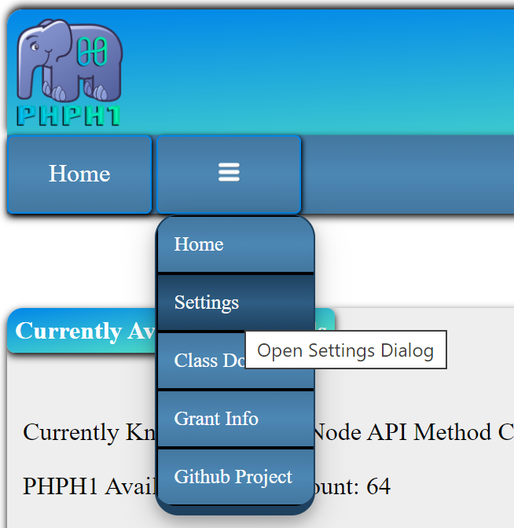

A learning tool for developers on the Harmony v2 Node API. It allows you to test every API method using real world input and see how a direct JSON request is formatted as well as how the JSON return data is formatted for each request. It also includes built in documentation for each method. Just browse to the method you want to learn about using the methods menu at the top right of the page.
A PHP wrapper class for the Harmony v2 Node API that allows other languages to make Harmony V2 Node API calls without worrying about input validation or properly formatting the JSON request.
A PHP wrapper class for the Harmony v2 Node API that can be used in your own PHP + whatever driven project.
A web host with PHP installed as well as the PHP_CURL extension installed and enabled
An SSL (https://) host. WARNING! RUNNING PHPH1 WITHOUT SSL IS A HUGE SECURITY RISK, DO NOT DO IT!
First suggestion is to start by using the full class package with the API explorer interface (what you are looking at now) included. It will guide you in sending requests to the class wrapper interface.
The full package is designed to be called by any language that can pull data from a web request. Checkout the Javascript example below.
You can get the package at the Github project releases page.
You can report issues at the Github project issues page.
At the right of the top floating menu is the methods dropdown menu. You can also search the methods in the menu.
The params/returns section is a clickable dropdown that shows what inputs the method uses as well as explains the method output data that can be expected.
The form section is available when a method requires client input. The params/returns dropdown will tell you what each form item requires for input.
The output section contains three sections of its own.
Harmony Node JSON RPC Request: Displays the actual JSON formatted request sent to the Harmony Node API Server
PHPH1 request URL for this method: Displays a link to the phph1_call.php file that would be used by an external scripting language to retrieve results. The URL can be used as a template for making calls for that specific method.
JSON return data: Displays the JSON data returned from the test request. Use this to ensure the method returns the data you expect to use in your project.
The hamburger menu has a "Settings" link to set the network and shard the client wants to use. The available networks and shards can be set in inc/config.php

The settings form has a network and shard dropdown. Select the network first and the available shards for that network will appear in the shard dropdown.
You can see what network and shard is being used on the right side of the menu bar.
There is an example javascript file in the project root directory named jstest.html
phph1_call.php is designed to accept a formatted GET request by any language that can read JSON formatted data returns. Refer to the Javascript example to see a VERY basic example how remote calls would work.
The output for each method includes the phph1_call.php formatted URL for that method. You can use that to build your javascript query code.
Extract the package and upload all files to your web host. The package contents can sit in your document root or any sub directory.
You will have to handle the archive a little differently depending on whether you downloaded the .zip or the .tar.gz file.
The .zip file, if extracted with no directory options will extract all the files to the current directory which can be messy. If using the zip file on a Linux/Unix machine, be sure to extract it into a directory where no other files exist or use the unzip -d option.
The tar.gz package will extract within a directory that matches the release name.
It is highly suggested whether using the zip or tar.gz, you extract the package outside of your project and then copy it to where you want it. This will ensure nothing gets accidentally overwritten.
$phph1_debug
Variable used to enable (set to 1) or disable (set to 0) API Explorer PHP debugging. Enabling this exposes many things to the client, I highly suggest not using it in a production environment unless it is a last resort. It also puts big ugly warnng header at the top of the pages so you are aware debugging is enabled.
$phph1_blockedaddr
This array is used to block IP addresses if necessary. Just add an IP address to the array like the example and the code will use the $_SERVER['REMOTE_ADDR'] to see if users are blocked. If the $phph1_allowedaddr array is not empty, this array gets ignored
$phph1_allowedaddr
This array is used to only allow specific IP Addresses. Just add an IP address to the array like the example and the code will use the $_SERVER['REMOTE_ADDR'] to make sure the request is allowed by the client. If this array has any values in it, the $phph1_blockedaddr is ingored due to redundancy. REMINDER! Usig this blocks all hosts except the hosts listed in this array.
$phph1_allowbigdata
Some requests have a page index (page number) option. Included insome of those options is the ability to use -1 as the index page. When using -1 the data set returned could possibly be huge causing a massive load on the server. By default using the -1 option is disabled to prevent this from happening. You can enable -1 page requests here by setting $phph1_allowbigdata to 1
$phph1_apiaddresses
This is a multi-dimensional array that holds the node and shard information. By default this array contains the official Harmony nodes but you can comment them out and add your own personal nodes as shown where the array is set. if you do add your own node address, be sure to also set $default_network and $default_shard as well
$default_network
Sets the default network (also the network used by the rpc script). It MUST use a network listed in the $phph1_apiaddresses array. For example by default it is set to use "mainnet".
$default_shard
Sets the default shard (also the shard used by the rpc script). It MUST use a shard listed in the $phph1_apiaddresses array. For example by default it is set to use "0".
$default_pagesize
The default page size for methods that return multiple pages of data
$max_pagesize
This is the maximum number of items per page when a method returns multiple pages of data. This prevents a client from reuesting large datasets in a single call which will put a heavy load on the web server.
$phph1_methods
An array of the available methods. This is used to prevent a client from requesting a method that doesn'teist. You can use a PHP comment out individual lines to disable a method.
$sorted_Methods
This is just the $phph1_methods array that has been sorted alphabetically so the front end dropdown menu makes some sense.
Although this is an effective way to manage access to your PHPH1, it is suggested to use it as a second layer of defense with the first layer being limiting access to the directory containing PHPH1 using .htaccess (Apache). There is a good tutorial over at htaccessbook.com (No Affiliation, just a place I found)
You can allow everyone and block specific IP addresses using the $phph1_blockedaddr array in inc/config.php
You can block everyone and only allow specific IP addresses using the $phph1_allowedaddr array in inc/config.php.
This option is automatically enabled once the first IP address is added to the $phph1_blockedaddr array
Leaving the $phph1_blockedaddr array empty disables this option
NOTE: This option is disabled if the $phph1_allowedaddr array contains any entries.
This option is automatically enabled once the first IP address is added to the $phph1_allowedaddr array
Leaving the $phph1_allowedaddr array empty disables this option
NOTE: Adding and IP address to this option disables the $phph1_blockedaddr array if it contains any entries. there is no reason o block if everyone but the allowed IP address[es] is blocked by default